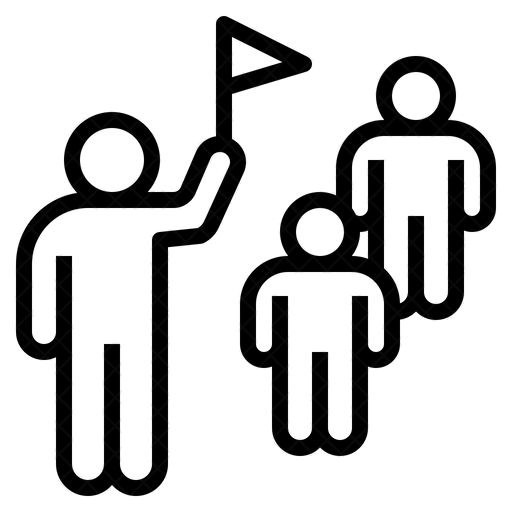
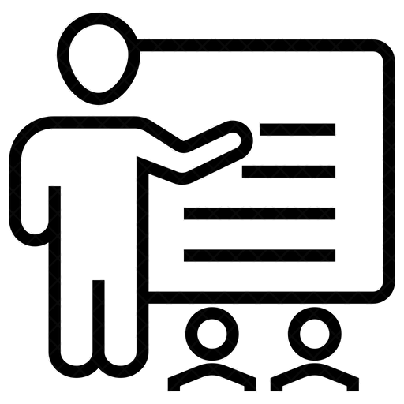

Odense Glasværk tour
Som gæst hos Odense Glasværk bliver du vist rundt på værkstedet. Du oplever hvordan glasset bliver støbt og pustet på helt tæt hold. Som gæst kan du opleve værktøj og glaspustere fra Fyens Glasværk som det foregik siden 1873.
Efter rundvisningen af glasværket fortæller glaspusterne om Odense Glasværks indflydelse på Odense og Glasværker over hele Danmark.
Derefter viser de processen bag den ældgammel glaspusterteknik som man får lov til at opleve på tæt hold.Til sidst får du muligheden for at købe de håndlavet glasprodukter i vores butik.